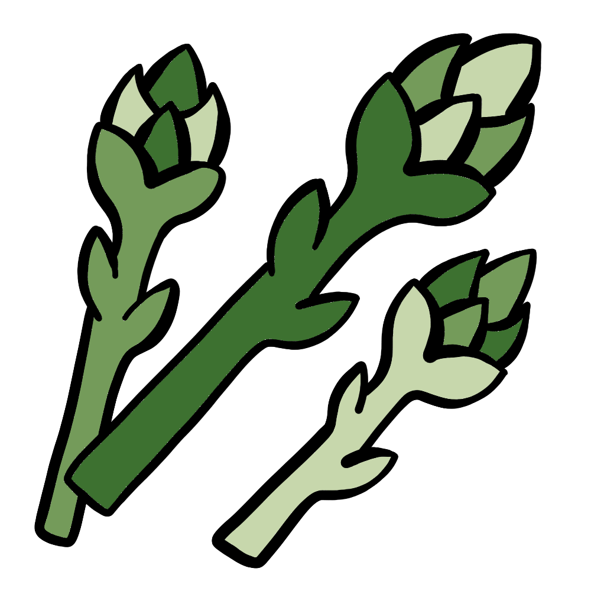

How to grow Asparagus
A Step by step Guide
Asparagus is a perennial vegetable that requires patience but rewards growers with delicious spears year after year. Once established, an asparagus bed can produce for up to 20 years. Follow this guide to grow healthy, productive asparagus plants.
Difficulty Rating: Moderate to Difficult
Best Season to Grow: Spring
Can Be Grown: Outdoors
Supplies Needed to Grow Asparagus
Asparagus crowns (1-year-old recommended) or seeds
Well-draining, sandy or loamy soil
Compost or balanced fertilizer (10-10-10)
Garden fork or tiller
Mulch (straw, leaves, or wood chips)
Raised garden bed (optional)
Watering can or hose
Setting Up Your Asparagus Garden
Choosing the Right Location
Sunlight: Asparagus thrives in full sun, requiring at least 6-8 hours of direct sunlight per day.
Soil: Use well-draining, sandy, or loamy soil with a pH between 6.5 and 7.5.
Spacing: Plant crowns 12-18 inches apart in rows spaced 3-4 feet apart to allow proper growth.
Raised Beds: Asparagus does well in raised beds with deep, fertile soil.
Preparing the Soil
Loosen the soil to a depth of at least 12 inches to encourage strong root development.
Mix compost or well-rotted manure into the soil to improve fertility.
Avoid planting in areas with poor drainage, as asparagus roots are prone to rot.
Planting Asparagus
Planting Crowns: Dig trenches 6-8 inches deep and space crowns 12-18 inches apart. Cover with 2 inches of soil, gradually filling the trench as shoots emerge.
Growing from Seeds: Start seeds indoors 12-14 weeks before the last frost. Transplant when seedlings are 10-12 inches tall.
Water Immediately: After planting, water thoroughly to help establish the roots.
Caring for Your Asparagus Plants

Watering
Keep the soil evenly moist but not waterlogged, providing 1 inch of water per week.
Reduce watering once plants are established, but keep soil moist in dry conditions.
Fertilizing
Apply a balanced fertilizer in early spring and after harvest.
Avoid excessive nitrogen, which can promote weak, spindly growth.
Mulching & Weed Control
Apply mulch to retain moisture and suppress weeds.
Hand-pull weeds carefully to avoid disturbing asparagus roots.
Pest and Disease Prevention
Watch for pests such as asparagus beetles and aphids.
Use organic pesticides or neem oil if infestations occur.
Avoid overwatering to prevent diseases like crown rot and rust.

Harvesting
Wait until the second or third year before harvesting asparagus spears to allow plants to establish.
Harvest spears when they are 6-8 inches tall, cutting them at the base with a sharp knife.
Continue harvesting for 6-8 weeks, then allow spears to grow into ferns to nourish the roots.
By following these steps, you can successfully grow asparagus and enjoy fresh, homegrown spears for years to come. Happy gardening! 🌱